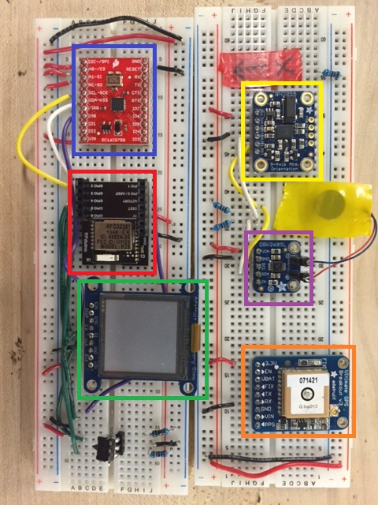
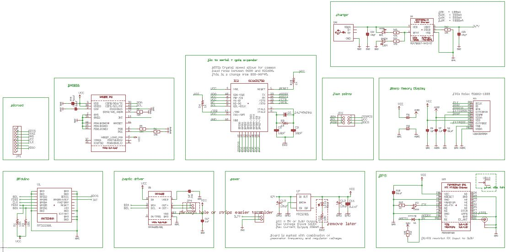

Project Idea
The idea of this project is to study how children interact with electronics outside of the ever present cell phones and laptops. This facet of the project involves creating a wearable device that users can program locations of interest in, which the device then helps them navigate to.
Team Members: Kevin Tian
My Responsibilities
I was responsible for designing and implementing the electrial and software systems for this project. I also helped choose which components we would use based on specifications, size and price.
Below is a breadboard mockup of all of the working components.

The components int the annotated breadboard above are:
Blue: SC16IS770 I2C/SPI to UART converter and GPIO expander
Red: RFduino microcontroller
Green: Sharp Memory LCD Display
Yellow: BNO055 9-axis absolute orientation sensor
Purple: DRV2605L Haptic Motor Driver
Orange: MTK3339 GPS
This was an interesting project because it required integrating many devices in a small package. As such, we chose the RFduino as our microcontroller, which has a relatively powerful Cortex-M0 processor in a convenient small package, as well as the possibility of Bluetooth communication. The issue, however, was the relatively small amount of pins available, so we used a SC16IS750 I2C to UART converter and GPIO port expander, which I wrote a simple library for. This solved our pin and communication issue (and at the same time made communications to certain devices a little more complicated).
I've created a simple web app to help search for locations of interest to load onto the watch.
I'm currently working on a test PCB for this project. Below is the schematic containing all components.

The first iteration will be a large test PCB created on the Berkeley Invention Lab's in house LPKF PCB drill. Further iterations will shrink the size of the PCB to make it more suitable for a wearable device.